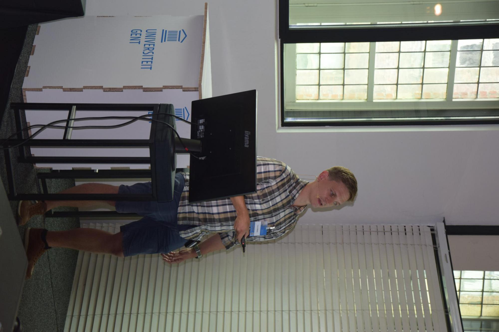

|
 Patrick Willems
Post-doctoral researcher at Ghent University. Passionate about discovery biology using (multi-)OMICS datasets.
Ghent, Belgium |
Research experience I obtained my master degree at Ghent University after plant studying cold stress signaling in plants during six months in the Vaughan Hurry lab in Umeå (Sweden). Afterwards, I continued studying plant abiotic stress signaling during my PhD in the Oxidative Stress Signaling group of Frank Van Breusegem in collaboration with the proteomics group of Kris Gevaert. My PhD work mostly entailed integrative –OMICS analysis of transcriptomic and proteomic datasets. As a post-doctoral researcher, I was active in the field of microbiology by annotating novel proteins in Salmonella enterica and infection biology. Afterwards, I re-oriented to study post-translational modifications (PTMs) in plants, with recent published work including experimental study of S-sulfenylation, AlphaFold2-based identification of disulfides and the development of an integrative plant PTM database ‘The Plant PTM Viewer’. |
|---|